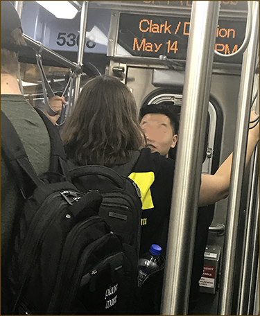
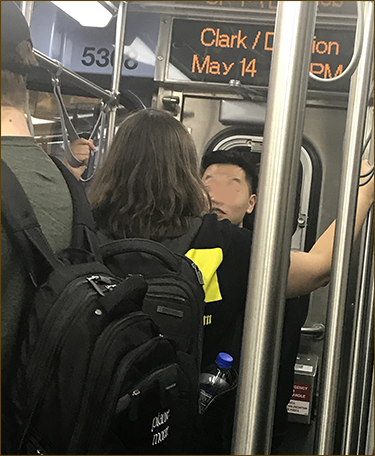

My Red Line experience began early one Tuesday Morning. The night before I had difficulty sleeping. I did not know what to expect. After parking my car at the Lincoln Park Campus, I followed the other students, parroting what they did. I swiped my Ventra card and headed up the stairs. Having read the EL instructions online, I knew to take the 95th Street train to Jackson. It was a breeze.
After my loop classes were over, I headed back to Lincoln Park for an evening class. Unfortunately, a rather inebriated man had urinated on the floor near where he was sleeping. He awoke, and before exiting, he urinated again for good measure. Welcome to the Red Line.
 

On Monday, May 6, the evening news reported that a 14-year-old shot two men on the Argyle Red Line Platform. The next day after entering the Fullerton Station, I was furious to discover a total lack of security. Imagine my surprise on Tuesday, May 20, to see my first police officer and her muzzled dog on the train.
back to top